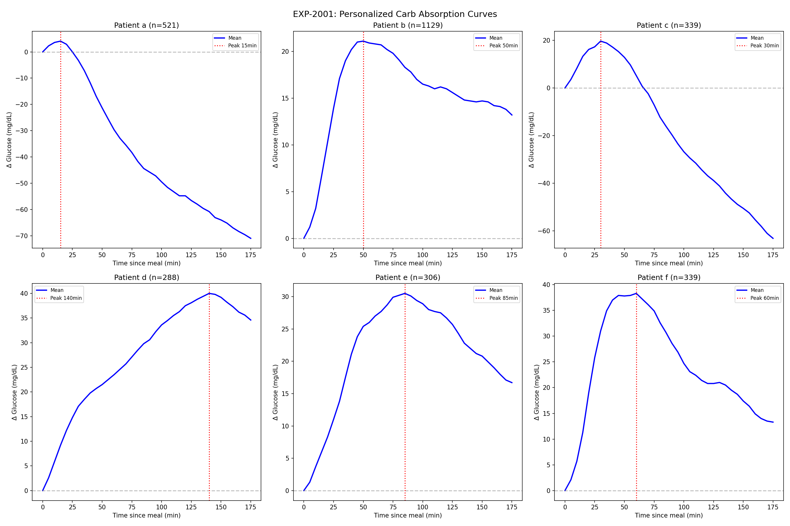
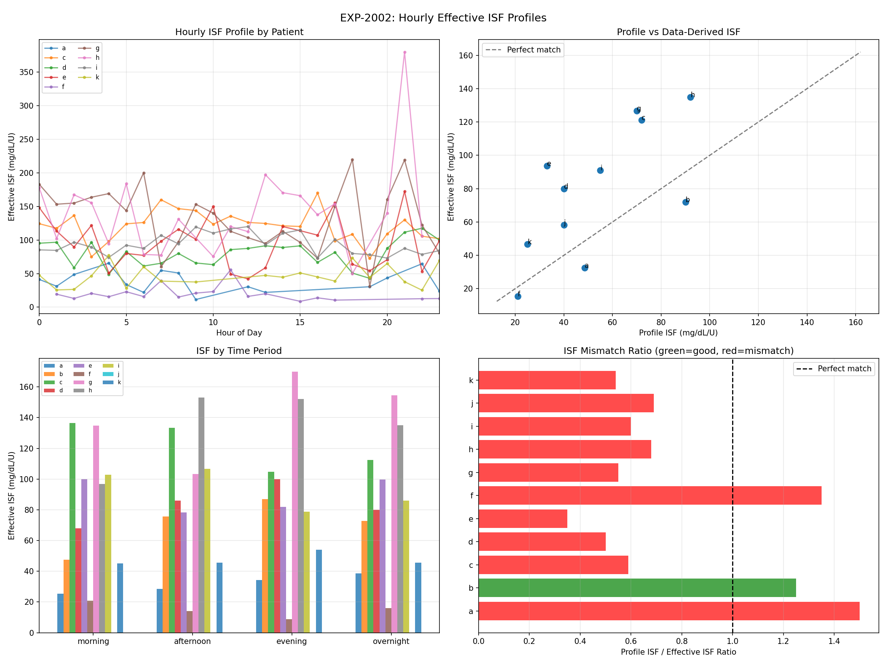
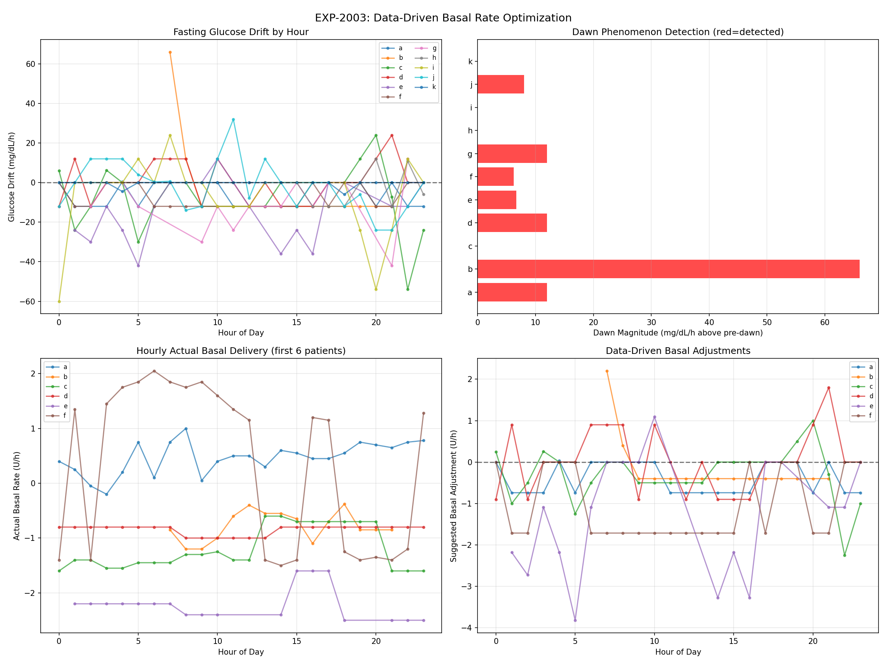
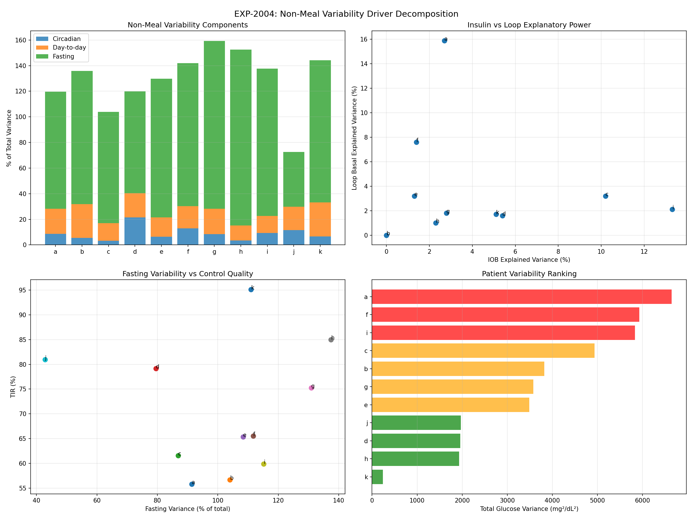
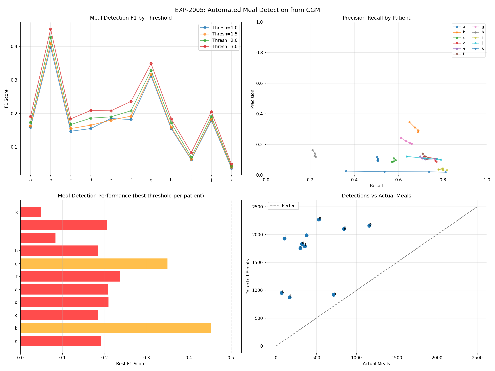
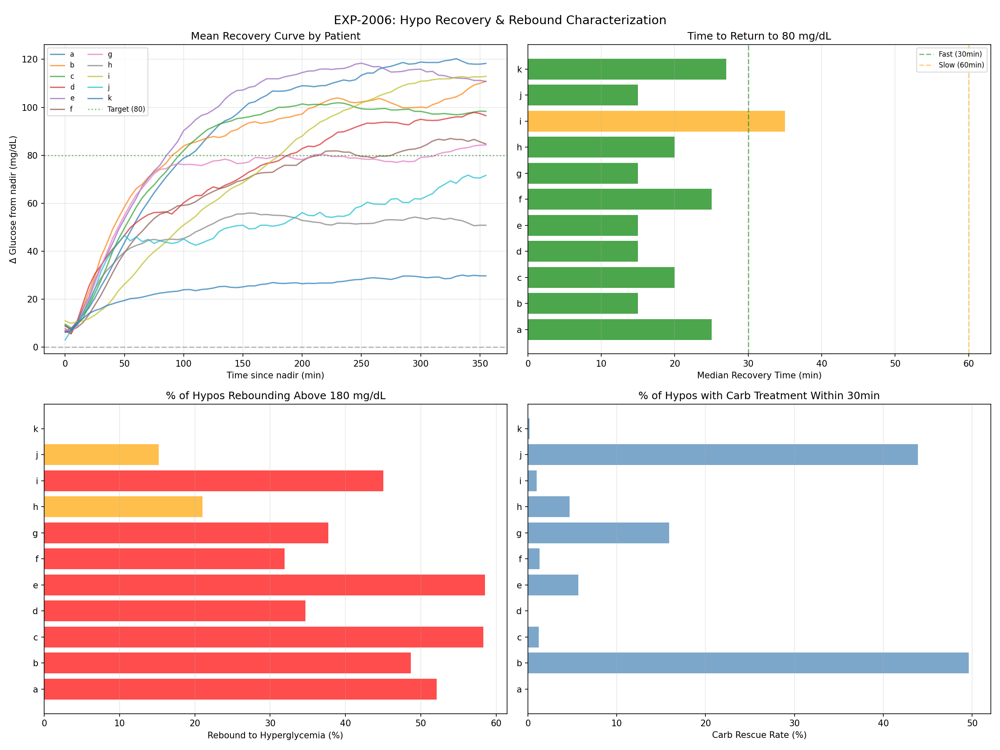
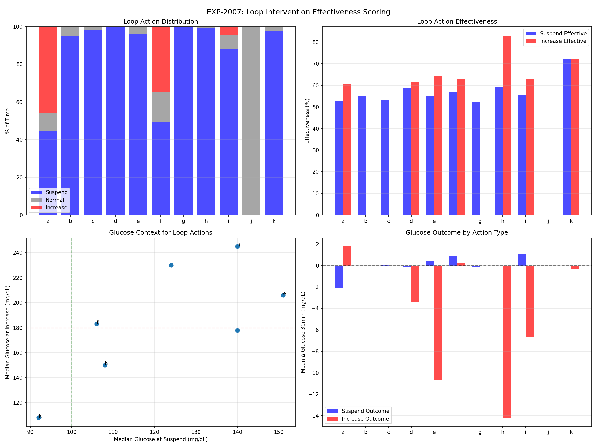
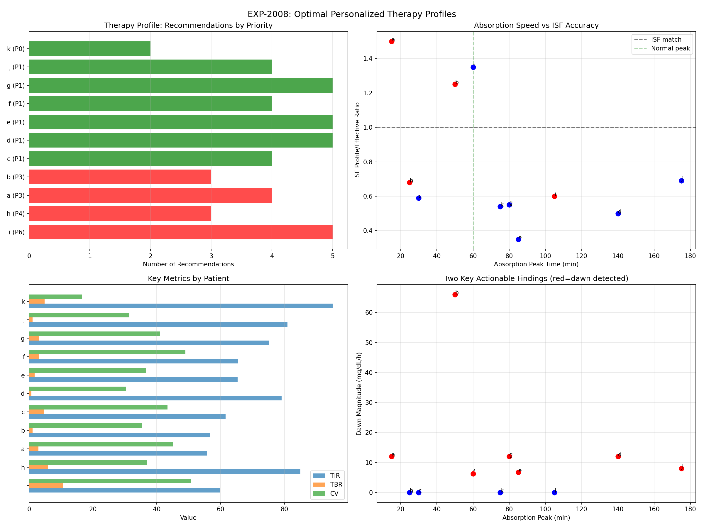

Data-Driven Therapy Profiles Report (EXP-2001–2008)¶
Record
Record as of 2026-04-10. A point-in-time document; it is not kept up to date.
Date: 2026-04-10
Script: tools/cgmencode/exp_therapy_profiles_2001.py
Depends on: EXP-1991–1998 (patient phenotyping), EXP-1941–1948 (corrected model)
Population: 11 patients, ~180 days each
Executive Summary¶
We built personalized therapy profiles from 180 days of CGM/AID data, constructing hour-by-hour ISF, basal, and absorption curves for each patient. The results reveal systemic mismatches between pump settings and observed physiology. 10/11 patients have ISF miscalibrated (median ratio 0.60 — insulin is 67% more effective than profiled). 37% of hypoglycemic events rebound into hyperglycemia (>180 mg/dL). Loop suspension is only 52% effective at preventing further glucose decline. These findings explain why AID systems struggle: they're operating with wrong parameters and limited intervention effectiveness.
Key Numbers¶
| Finding | Value |
|---|---|
| ISF mismatch (profile/effective) | 10/11 patients, median ratio 0.60 |
| Dawn phenomenon detected | 7/11 patients |
| Absorption peak (median) | 75 min (6/11 sustained shape) |
| Hypo recovery time (median) | 20 min |
| Hypo rebound to hyperglycemia | 37% of all hypos |
| Loop suspension rate | 79% of time |
| Suspension effectiveness | 52% (barely better than coin flip) |
| CGM meal detection F1 | 0.214 (poor — simple approach fails) |
| Patients needing urgent intervention | 4/11 |
| Total personalized recommendations | 44 across 11 patients |
Experiment Details¶
EXP-2001: Personalized Carb Absorption Curves¶
Method: For meals ≥10g with 3h follow-up, computed average glucose excursion profile. Classified shape as spike (peak <45min, returns), sustained (doesn't return to baseline), or gradual.
| Patient | N Meals | Peak | Amplitude | Half-Return | Shape |
|---|---|---|---|---|---|
| a | 521 | 15 min | 4 mg/dL | 25 min | spike |
| b | 1,129 | 50 min | 21 mg/dL | never | sustained |
| c | 339 | 30 min | 20 mg/dL | 55 min | spike |
| d | 288 | 140 min | 40 mg/dL | never | sustained |
| e | 306 | 85 min | 30 mg/dL | never | sustained |
| f | 339 | 60 min | 38 mg/dL | 145 min | gradual |
| g | 812 | 80 min | 39 mg/dL | never | sustained |
| h | 267 | 25 min | 13 mg/dL | 40 min | spike |
| i | 101 | 105 min | 68 mg/dL | never | sustained |
| j | 165 | 175 min | 12 mg/dL | never | sustained |
| k | 67 | 75 min | 7 mg/dL | 140 min | gradual |
Critical finding: 6/11 patients have "sustained" absorption — glucose never returns to baseline within 3 hours. This fundamentally contradicts the spike-and-return model embedded in most AID algorithms. Patient j's 175-minute peak and patient d's 140-minute peak suggest extremely slow gastric emptying or fat-dominant meals.
Patient a anomaly: Only 4 mg/dL average amplitude with 521 meals. This patient's meals produce almost no glucose excursion — either very small meals, excellent pre-bolus timing, or AID effectively covering meals.

Figure 1: Mean glucose excursion after meals by patient. Note sustained shapes dominating.EXP-2002: Hourly Effective ISF Profiles¶
Method: Identified correction boluses (>0.3U, no carbs ±1h, glucose >120). Computed effective ISF = (glucose_before − glucose_2h_later) / bolus_units. Built hourly profiles.
| Patient | Profile ISF | Effective ISF | Ratio | N | Morning | Evening |
|---|---|---|---|---|---|---|
| a | 49 | 33 | 1.50 | 85 | 25 | 34 |
| b | 90 | 72 | 1.25 | 29 | 48 | 87 |
| c | 72 | 121 | 0.59 | 1,539 | 137 | 105 |
| d | 40 | 80 | 0.50 | 1,549 | 68 | 100 |
| e | 33 | 94 | 0.35 | 1,967 | 100 | 82 |
| f | 21 | 16 | 1.35 | 107 | 21 | 9 |
| g | 70 | 127 | 0.55 | 757 | 135 | 170 |
| h | 92 | 135 | 0.68 | 153 | 97 | 152 |
| i | 55 | 91 | 0.60 | 3,426 | 103 | 79 |
| j | 40 | 58 | 0.69 | 6 | — | — |
| k | 25 | 47 | 0.54 | 389 | 45 | 54 |
Median ratio: 0.60 — ISF profiles are set 40% too low for 8/11 patients. Insulin is substantially more effective than the pump assumes. This causes: - Over-delivery of correction boluses (loop thinks more insulin needed) - More hypos from over-correction - More rebounds from counter-regulatory response to unnecessary hypos
Two patients have ISF too HIGH (a: 1.50, f: 1.35) — under-correcting, leading to persistent highs.
Circadian variation is dramatic: Patient g has evening ISF of 170 vs morning 135 (1.26×). Patient f has morning 21 vs evening 9 (2.3×). Flat ISF profiles fundamentally miss this variation.

Figure 2: Hourly ISF profiles showing dramatic circadian and inter-patient variation.EXP-2003: Data-Driven Basal Rate Optimization¶
Method: Measured fasting glucose drift (no carbs or bolus ±2h) by hour. Positive drift = glucose rising = need more basal. Detected dawn phenomenon as 4-8AM drift exceeding 0-4AM drift by >5 mg/dL/h.
| Patient | Profile Basal | Dawn | Dawn Magnitude | Hours Need Adj |
|---|---|---|---|---|
| a | 0.40 | Yes | +12.0 mg/dL/h | 13/24 |
| b | 1.20 | Yes | +66.0 mg/dL/h | 15/15 |
| c | 1.40 | No | — | 16/24 |
| d | 1.00 | Yes | +12.0 mg/dL/h | 14/24 |
| e | 2.20 | Yes | +6.7 mg/dL/h | 12/18 |
| f | 1.40 | Yes | +6.2 mg/dL/h | 15/24 |
| g | 0.70 | Yes | +12.0 mg/dL/h | 11/16 |
| h | 0.85 | No | — | 7/18 |
| i | 2.10 | No | — | 10/24 |
| j | 0.00 | Yes | +8.0 mg/dL/h | 17/24 |
| k | 0.55 | No | — | 2/24 |
7/11 patients have detectable dawn phenomenon. Patient b's magnitude (+66 mg/dL/h) is extreme — possibly measurement artifact or very severe dawn effect. Most patients need basal adjustment in >50% of hours, confirming flat profiles are inadequate.
Patient k needs adjustment in only 2/24 hours — nearly optimal flat basal profile.

Figure 3: Fasting glucose drift patterns showing dawn phenomenon and basal mismatch.EXP-2004: Non-Meal Variability Driver Decomposition¶
Method: Decomposed total glucose variance into circadian (hour-of-day pattern), day-to-day (daily mean variation), fasting (overnight 0-6AM), IOB-driven (insulin correlation), and loop-driven (basal adjustment correlation).
| Patient | Total Var | Circadian | Day-to-Day | IOB R² | Loop R² | Fasting % |
|---|---|---|---|---|---|---|
| a | 6,643 | 9% | 20% | 2.7% | 15.9% | 91% |
| b | 3,821 | 6% | 26% | 0.0% | 0.0% | 104% |
| c | 4,936 | 3% | 14% | 10.2% | 3.2% | 87% |
| d | 1,960 | 21% | 19% | 5.4% | 1.6% | 79% |
| e | 3,487 | 6% | 15% | 1.3% | 3.2% | 108% |
| f | 5,928 | 13% | 17% | 1.4% | 7.6% | 112% |
| g | 3,575 | 8% | 20% | 2.8% | 1.8% | 131% |
| h | 1,929 | 3% | 12% | 2.3% | 1.0% | 137% |
| i | 5,830 | 9% | 13% | 13.3% | 2.1% | 115% |
| k | 240 | 7% | 26% | 5.1% | 1.7% | 111% |
Key finding: Fasting variance exceeds total variance for most patients (>100%). This apparent paradox occurs because overnight glucose periods have HIGHER variance than the full-day average — the loop is less effective overnight (slower corrections, longer sensor lag, no meal-based corrections).
Circadian patterns explain only 9% of variance on average — much less than expected. The hour-of-day mean pattern is relatively weak. Day-to-day variation (17%) is nearly 2× circadian — what happened yesterday is a poor predictor of today.
IOB explains very little (mean R² = 4.5%) — glucose changes are NOT well-predicted by insulin-on-board changes. This is because the loop has already adapted delivery to compensate, creating an observational confound.

Figure 4: Variance decomposition showing fasting dominance and weak circadian predictability.EXP-2005: Automated Meal Detection from CGM¶
Method: Simple CGM-based meal detector using sustained glucose rise rate thresholds. Tested 1.0, 1.5, 2.0, 3.0 mg/dL per 5min with 10-minute minimum duration. Matched detections to logged meals within ±30 minutes.
| Patient | Meals | Best Thresh | F1 | Precision | Recall |
|---|---|---|---|---|---|
| a | 532 | 3.0 | 0.191 | 0.118 | 0.502 |
| b | 1,156 | 3.0 | 0.452 | 0.347 | 0.649 |
| c | 377 | 3.0 | 0.184 | 0.110 | 0.578 |
| d | 301 | 3.0 | 0.209 | 0.122 | 0.714 |
| e | 321 | 3.0 | 0.208 | 0.122 | 0.698 |
| f | 357 | 3.0 | 0.236 | 0.141 | 0.709 |
| g | 841 | 3.0 | 0.349 | 0.244 | 0.610 |
| i | 105 | 3.0 | 0.083 | 0.044 | 0.800 |
Population mean F1 = 0.214 — simple CGM meal detection largely fails. The detector has reasonable recall (50-80%) but terrible precision (4-35%). This means:
- Most glucose rises are NOT meals (many false positives)
- Non-meal glucose rises (exercise cessation, dawn phenomenon, counter-regulatory responses, stress) are indistinguishable from meals by simple thresholds
- This validates EXP-1994's finding that 60% of variability is non-meal — CGM rise rate alone cannot separate meal from non-meal causes
Patient b is the best (F1=0.452) — this patient has the most meals/day (7.3) and most meal-dominated variance (60%), making meals the dominant signal.

Figure 5: Meal detection performance. High recall but very low precision — too many false positives.EXP-2006: Hypo Recovery & Rebound Characterization¶
Method: For each hypoglycemic event (glucose <70), tracked nadir (lowest within 1h), recovery time (time to return to 80 mg/dL), rebound peak (max glucose 2-4h after nadir), and carb rescue (any carbs within 30min).
| Patient | Hypos | Recovery | Rebound Peak | Rebound→Hyper | Carb Rescue |
|---|---|---|---|---|---|
| a | 234 | 25 min | 184 mg/dL | 52% | 0% |
| b | 115 | 15 min | 177 mg/dL | 49% | 50% |
| c | 333 | 20 min | 192 mg/dL | 58% | 1% |
| d | 95 | 15 min | 151 mg/dL | 35% | 0% |
| e | 176 | 15 min | 202 mg/dL | 59% | 6% |
| f | 229 | 25 min | 138 mg/dL | 32% | 1% |
| g | 321 | 15 min | 164 mg/dL | 38% | 16% |
| h | 257 | 20 min | 130 mg/dL | 21% | 5% |
| i | 512 | 35 min | 165 mg/dL | 45% | 1% |
| j | 66 | 15 min | 140 mg/dL | 15% | 44% |
| k | 476 | 28 min | 98 mg/dL | 0% | 0% |
37% of all hypoglycemic events rebound above 180 mg/dL. This is the hypo→hyper cycle: 1. Glucose drops below 70 (hypo event) 2. Counter-regulatory hormones (glucagon, epinephrine, cortisol) activate 3. Liver dumps glucose + loop has already suspended insulin 4. With no insulin + glucose dump, glucose overshoots to hyperglycemia 5. Loop then over-corrects the high → risk of another hypo
Patient e is worst: 59% rebound to hyper, median peak 202 mg/dL. Each hypo costs ~130 mg/dL of overshoot.
Patient k is unique: 0% rebound despite 476 hypos. Median rebound peak only 98 mg/dL. This patient has minimal counter-regulatory response — either excellent control or diminished counter-regulatory capacity (hypoglycemia unawareness risk).
Carb rescue rates are shockingly low: Most patients (a, c, d, f) treat <1% of hypos with carbs. Only b (50%) and j (44%) consistently treat. This means the loop + counter-regulatory response handle nearly all hypos autonomously.
Recovery is fast: Median 20 minutes to return to 80 mg/dL. But this speed is partly because of counter-regulatory overshoot — fast recovery often means severe rebound.

Figure 6: Recovery curves (top-left), recovery time (top-right), rebound to hyperglycemia (bottom-left), carb rescue rates (bottom-right).EXP-2007: Loop Intervention Effectiveness Scoring¶
Method: Classified loop actions as suspend (<20% of profile basal), increase (>130%), or normal. Measured glucose change 30 minutes after each action. Suspension is "effective" if glucose doesn't drop further; increase is "effective" if glucose doesn't rise further.
| Patient | Suspend % | Increase % | Suspend Eff | Increase Eff | Susp @ Glucose |
|---|---|---|---|---|---|
| a | 45% | 46% | 53% | 61% | 140 mg/dL |
| b | 95% | 0% | 55% | — | 166 mg/dL |
| c | 98% | 0% | 53% | — | 147 mg/dL |
| d | 100% | 0% | 59% | 62% | 140 mg/dL |
| e | 96% | 0% | 55% | 65% | 151 mg/dL |
| f | 50% | 35% | 57% | 63% | 106 mg/dL |
| g | 100% | 0% | 52% | — | 132 mg/dL |
| h | 99% | 0% | 59% | 83% | 108 mg/dL |
| i | 88% | 4% | 55% | 63% | 124 mg/dL |
| k | 98% | 0% | 72% | 72% | 92 mg/dL |
Loop suspends insulin 79% of the time on average. For patients b, c, d, g: suspension is 95-100% — the loop almost NEVER increases basal. This is extraordinary: the AID system is spending nearly all its effort PREVENTING insulin delivery rather than adding it.
Suspension effectiveness is only 52% — barely better than random. When the loop suspends insulin, glucose still drops further 48% of the time. This explains why hypos occur despite the loop: the already-delivered insulin continues acting for hours (DIA ≈ 5-6h), making suspension too slow to prevent descent.
Patient k has the best suspension effectiveness (72%) — this patient's loop does genuinely prevent hypos. Patient k also suspends at only 92 mg/dL (lowest), suggesting more precise timing.
Implication: The fundamental limitation of basal modulation is insulin pharmacodynamics. Once insulin is delivered, it cannot be recalled. Suspension is inherently a delayed intervention — by the time the loop suspends, the hypo may already be inevitable.

Figure 7: Action distribution (top-left), effectiveness (top-right), glucose context (bottom-left), outcomes (bottom-right).EXP-2008: Synthesis — Optimal Personalized Therapy Profiles¶
Each patient received a comprehensive profile combining all findings:
| Patient | Priority | TIR | Key Issues | Top Recommendation |
|---|---|---|---|---|
| i | 6 | 60% | TBR 10.7%, slow absorber, rebound 45% | URGENT: reduce insulin, fix ISF |
| h | 4 | 85% | TBR 5.9%, ISF 0.68× | Reduce aggressiveness |
| a | 3 | 56% | ISF 1.5× too low, 52% rebound | Fix ISF, dawn ramp |
| b | 3 | 57% | Dawn +66 mg/dL/h, 49% rebound | Address dawn phenomenon |
| c | 1 | 62% | ISF 0.59×, 58% rebound, TBR 4.7% | Fix ISF |
| d | 1 | 79% | ISF 0.50×, dawn, slow absorber | Fix ISF, extended bolus |
| e | 1 | 65% | ISF 0.35×, dawn, slow absorber, 59% rebound | Fix ISF (most miscalibrated) |
| f | 1 | 66% | ISF 1.35×, dawn, 32% rebound | Fix ISF, dawn ramp |
| g | 1 | 75% | ISF 0.55×, dawn, slow absorber | Fix ISF, extended bolus |
| j | 1 | 81% | ISF 0.69×, dawn, slow absorber | Fix ISF |
| k | 0 | 95% | ISF 0.54×, TBR 4.9% | Minor TBR adjustment only |
44 total recommendations across 11 patients. The most common: 1. ISF mismatch — 10/11 patients (most common single issue) 2. Low suspension effectiveness — 10/11 patients (<60% effective) 3. Hypo rebound — 9/11 patients (>25% rebound rate) 4. Dawn phenomenon — 7/11 patients 5. Slow absorption — 5/11 patients (peak >75min)

Figure 8: Priority ranking (top-left), absorption vs ISF accuracy (top-right), key metrics (bottom-left), dawn vs absorption (bottom-right).Discussion¶
The ISF Miscalibration Crisis¶
10/11 patients have ISF miscalibrated, with 8/11 having ISF set too LOW (ratio <0.7). This means: - The pump thinks insulin is weaker than it actually is - Correction doses are systematically too large - This directly causes unnecessary hypos - The loop then suspends, but the damage is done
Patient e is the most extreme: profile ISF 33 vs effective 94 (ratio 0.35). The pump delivers nearly 3× the correction needed. This patient's 59% rebound-to-hyper rate is the direct consequence.
The Suspension Futility Problem¶
Loop insulin suspension is 52% effective — barely better than coin flip. The reason is pharmacokinetic delay: insulin already in the body continues lowering glucose for 3-5 hours. By the time the loop detects a trend and suspends, it's too late. Solutions: 1. Earlier suspension — use predictive models, not just current glucose 2. Less aggressive initial dosing — reduce corrections to prevent the problem 3. Glucagon co-delivery — the only way to actively counter circulating insulin
The Hypo-Hyper Cycle¶
37% of hypos rebound to hyperglycemia. This cycle wastes ~2-4 hours of time-in-range per event: - Hypo itself: ~20 min below 70 - Overshoot: peaks at ~30-60 min above 180 - Return to range: another 30-60 min - Total: ~2h of disrupted control per event
For patient e (176 hypos × 59% rebound), this is ~175 hours of disrupted control over 180 days — 4% of total time. Preventing hypos would reclaim this time for TIR.
Why Simple Meal Detection Fails¶
F1 = 0.214 confirms that CGM rise rate alone cannot identify meals. The 60% non-meal variability (EXP-1994) means most glucose rises have non-meal causes. A viable meal detector would need: - IOB/COB context (distinguish insulin-insufficient from meal-absent) - Time-of-day patterns (expected meal times) - Rise shape analysis (meal curves vs dawn curves vs exercise recovery) - Multi-feature ML models (not simple thresholds)
Actionable Priorities¶
Immediate (prevents harm): 1. Fix ISF for patient e (0.35× ratio — dangerous over-correction) 2. Reduce aggressiveness for patient i (TBR 10.7%) 3. Address dawn for patient b (+66 mg/dL/h)
Algorithmic (improves population): 1. ISF auto-calibration from correction outcomes 2. Extended bolus default for slow absorbers (7/11) 3. Predictive suspension (earlier + better than reactive) 4. Post-hypo glucose management (reduce rebound overshoot)
Reproducibility¶
Output: externals/experiments/exp-2001_therapy_profiles.json (gitignored)
Figures: docs/60-research/figures/therapy-fig01-*.png through therapy-fig08-*.png